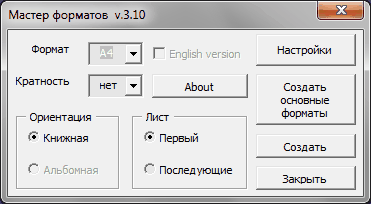
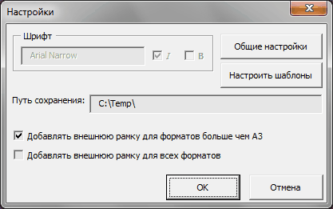
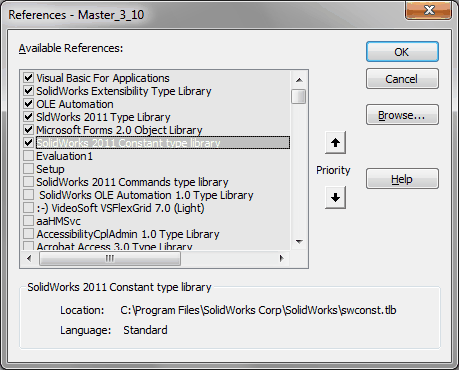

Макрос Master |
Top Previous Next |
|
Предназначен для создания файлов основных надписей в формате .slddrt на основе шаблонов. Функционал макроса задействован также при работе макроса DProp при создани листа или при изменении формата основной надписи. Шаблоны для первого и последующего листов, на основе которых создаются файлы основных надписей, расположены в папке Master. Это файлы Master_Template_Sheet1.SLDDRW и Master_Template_Sheet2.SLDDRW.
 qФормат - формат листа. qКратность - кратность формата (позволяет создавать форматы А4х3 А3х3 и т.д) qОриентация - позволяет при создании листа выбрать его ориентацию. qЛист - позволяет выбрать какой лист создавать, главный или последующие. qСоздать основные форматы - создает в указанной в настройках папке, все основные (не кратные) форматы основных надписей. qСоздать - создает основную надпись с параметрами, указанными в полях Формат, Кратность, Ориентация и Лист. qНастройки - вызывает окно настроек (см. ниже).

Настройки сохраняются в файле Master\Master.ini.
qШрифт - параметры шрифта, которые будут применены к шаблонам Master_Template_Sheet1.SLDDRW и Master_Template_Sheet2.SLDDRW при нажатии кнопки Настроить шаблоны. Параметры шрифта недоступны, если в меню Общие настройки задана Проверка оформления. В этом случае все параметры шрифта определяются файлом стандарта MyStandard.sldstd в папке SpecEditor. qОбщие настройки - вызов окна Общие настройки (см. пункт Установка и настройка) qНастроить шаблоны - происходит настройка шаблонов в соответствии с общими настройками и стандартом. qПуть сохранения - путь к папке с основными надписями. Если указываете свою папку, то не забудьте обязательно завершить строку с адресом - "слешем". qДобавлять внешнюю рамку для всех форматов - добавляется внешняя тонкая рамка по границам формата. Облегчает вырезание чертежа, распечатанного на бумаге большего формата. qОк - сохранение изменений в ini файл. qОтмена - выход без сохранения изменений.
Библиотеки:  |